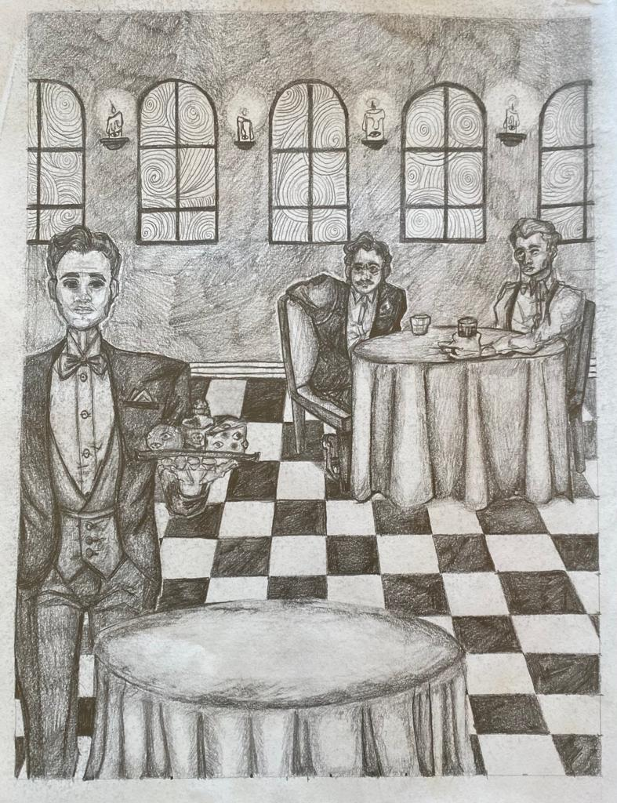
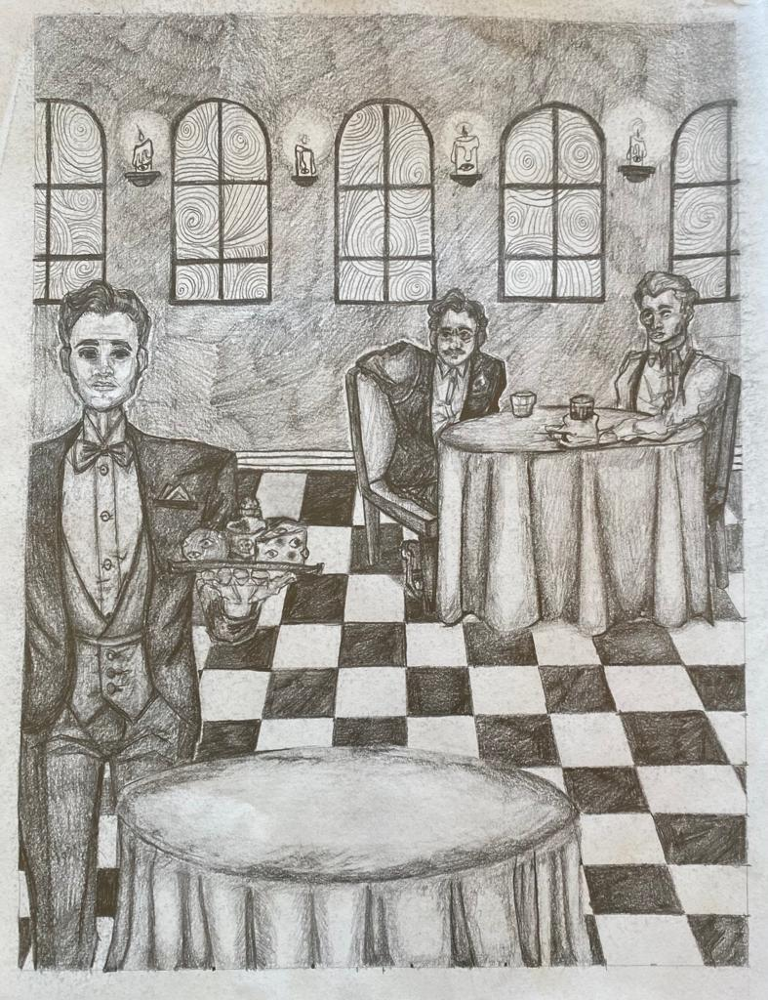
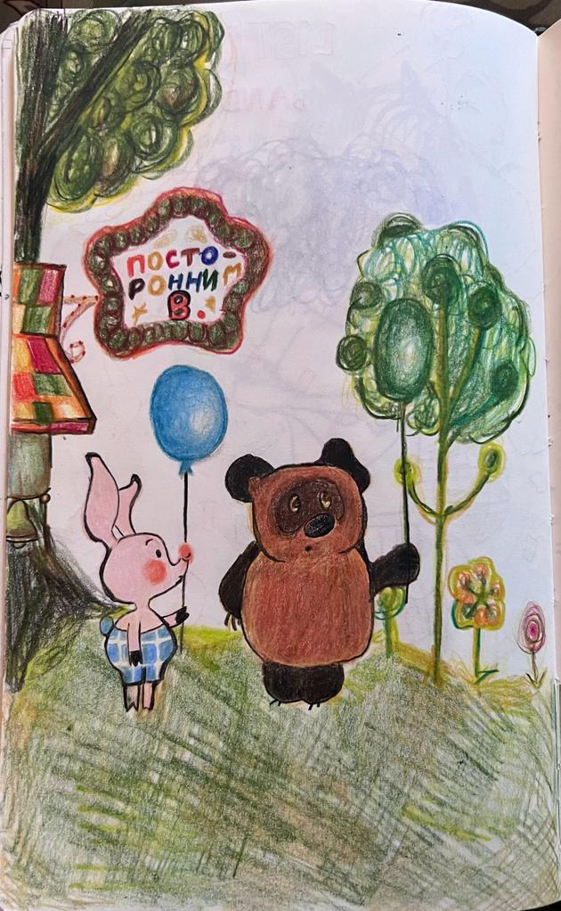
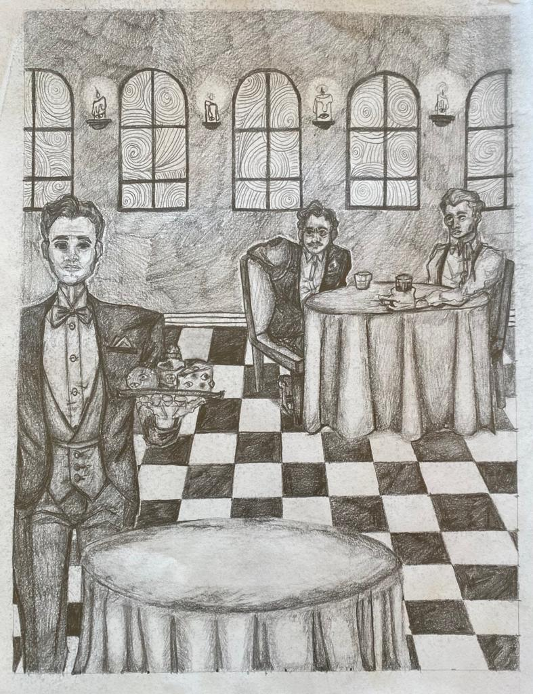
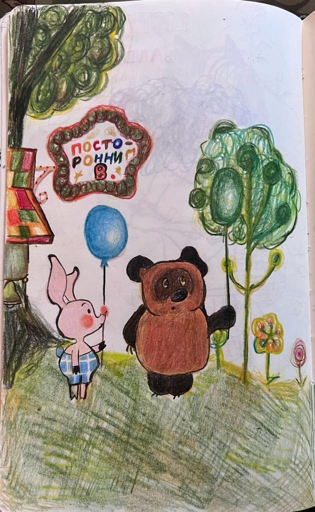
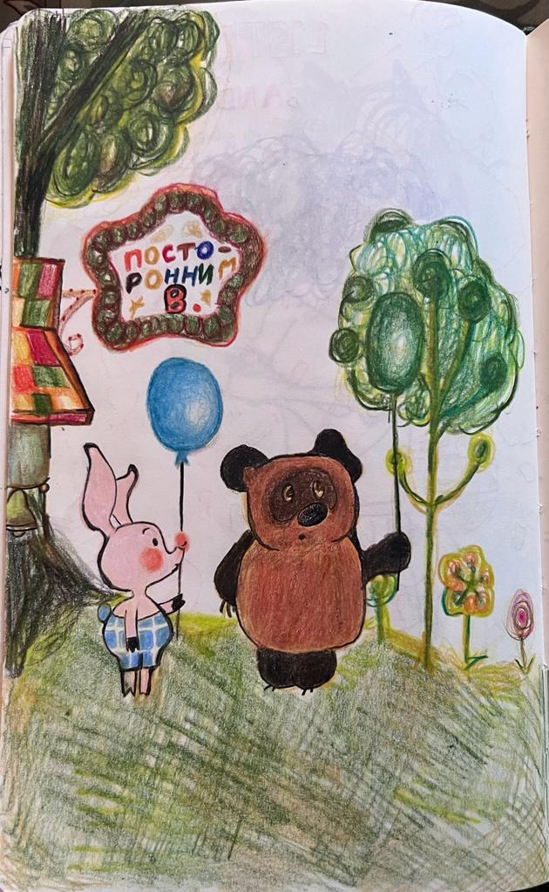
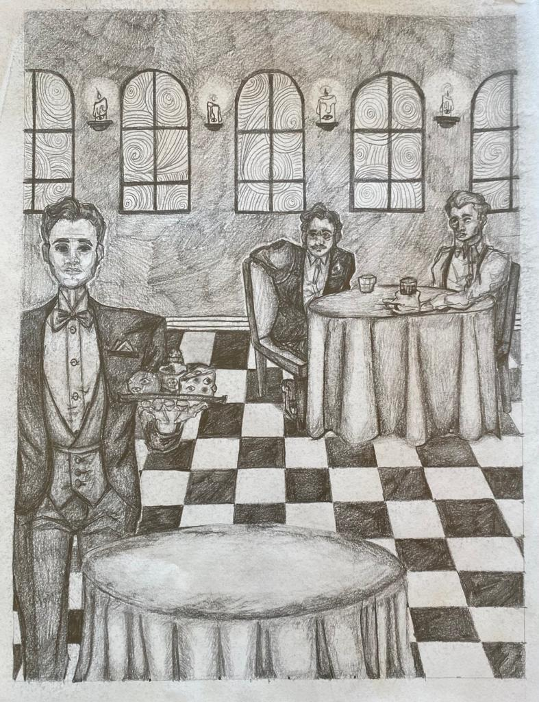
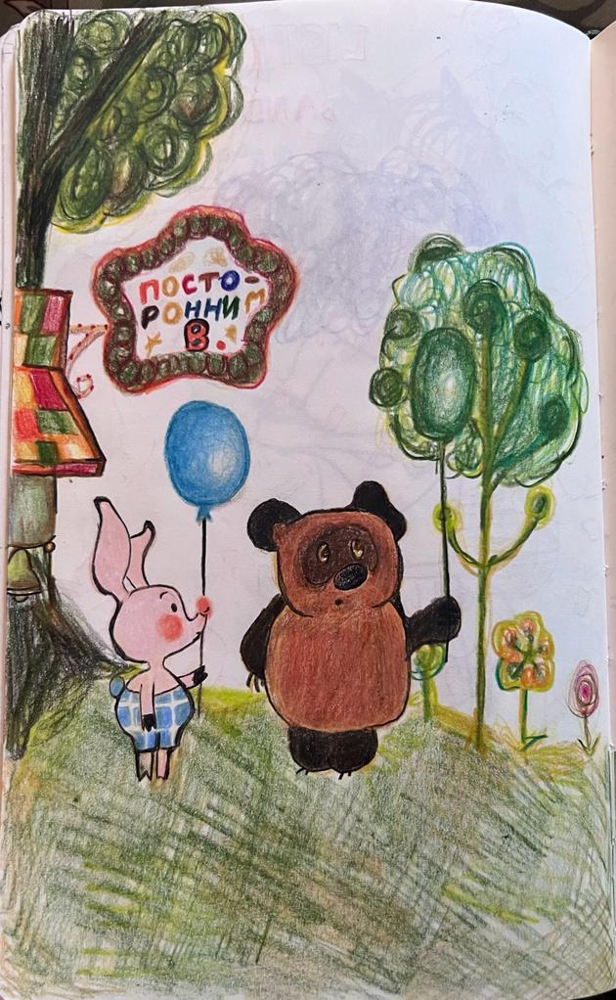

 





Hungry For Food
2023, Clip Studio Paint
A piece that is ment to envoke the comfort of homecooked food, music, and companionship
Gem Fusion
2023, Clip Studio Paint
A silly piece I did over the summer when my roommate and I found out we got the apartment we applied for! Based on an inside joke.
Sacred Deer In Headlights
2023, Graphite
Based on the constant impending sense of doom anxiety creates.
Radiohead Dupe
2023, Felt Tip Ink Pen
Drawn to capture the feeling of disociation that comes with greif
The Devil is in the Details
2023, Highlighter and Ink Pen
A fun little piece I did while listening to Disorder by Joy Division
Bob's Casino
2023, Ballpoint Pen and Highlighter
Based on "Bob's Casino" by Grian Chatten, made as a phone background for my dad.
Eat Men Eat
2022, Graphite
My final for my "life drawing" class in highschool, very inspired by early live recordings of the (then) unreleased Black Midi song, "Eat Men Eat."
Donnie Darko
2023, Graphite
Drawing I did after rewatching Donnie Darko.
Kim Deal made this happen
2023, Sharpie
The last two pages in the most recent sketchbook I finished, heavily inspired by the early music of "The Breeders."
Winnie Pooh Scene Redraw
2023, Ballpoint Pen and Colored Pencil
A scene redraw from the Russian Winnie the Pooh cartoon produced in 1969 by Soyuzmultfilm.